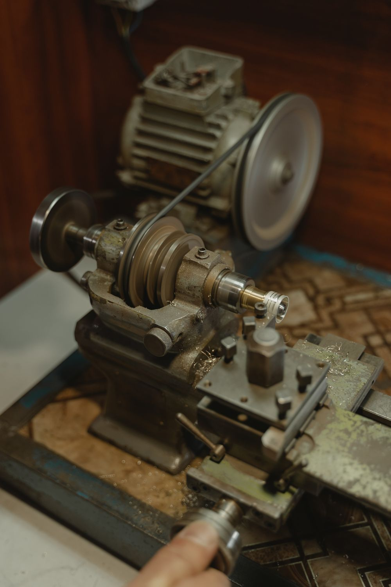

切削加工
マシニングセンタやNC旋盤による金属加工。プレート、シャフト、ブラケットなど、形状に合わせた加工を行います。
フライス加工・旋盤加工試作の一個も、現場を支える部品も。
図面に込められた意図をくみ取り、
必要なかたちを、確かな加工で。
東和精工は、金属部品の加工会社です。
年末年始の休業日について
立形マシニングセンタを導入しました
ホームページをリニューアルしました
産業機械の部品から、製造現場で使う治具まで。
材質・形状・用途を確認し、材料の手配から加工まで対応します。単品の試作もご相談ください。
マシニングセンタやNC旋盤による金属加工。プレート、シャフト、ブラケットなど、形状に合わせた加工を行います。
フライス加工・旋盤加工開発段階での試作品や、少量の部品製作に対応します。数量や納期が決まる前の段階でもご相談いただけます。
単品からご相談可能組立や検査に用いる治具、設備の補修部品を製作します。使用環境や取り付け方法を伺い、仕様を確認します。
位置決め治具・設備用部品鉄・ステンレス・アルミ・真鍮
掲載のない材質や表面処理についても、お問い合わせください。
東和精工は、埼玉県川口市の部品加工会社です。お客様の設計・生産担当者と加工条件を確認しながら、産業機械の部品製作を行っています。
図面だけでは伝わらない使い方や現場の事情まで。一つひとつ確認することを、ものづくりの出発点にしています。

加工・お見積もりのご相談